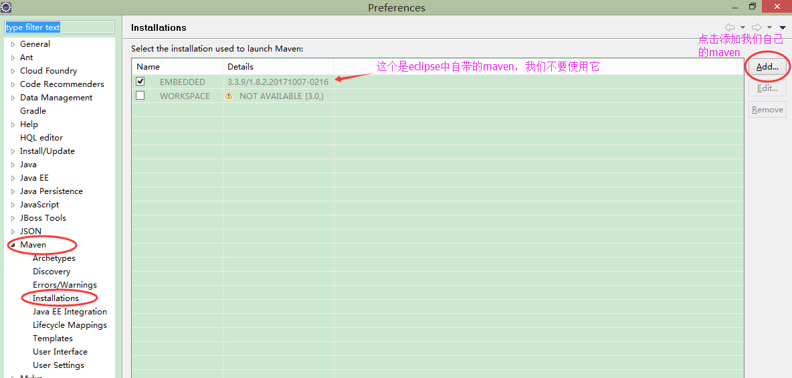
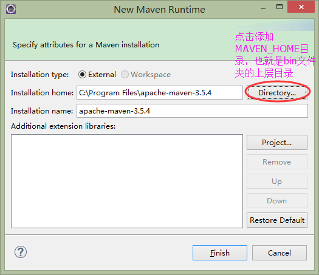
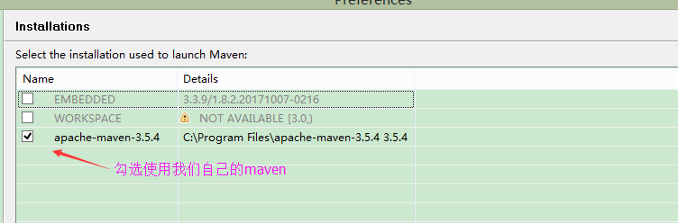
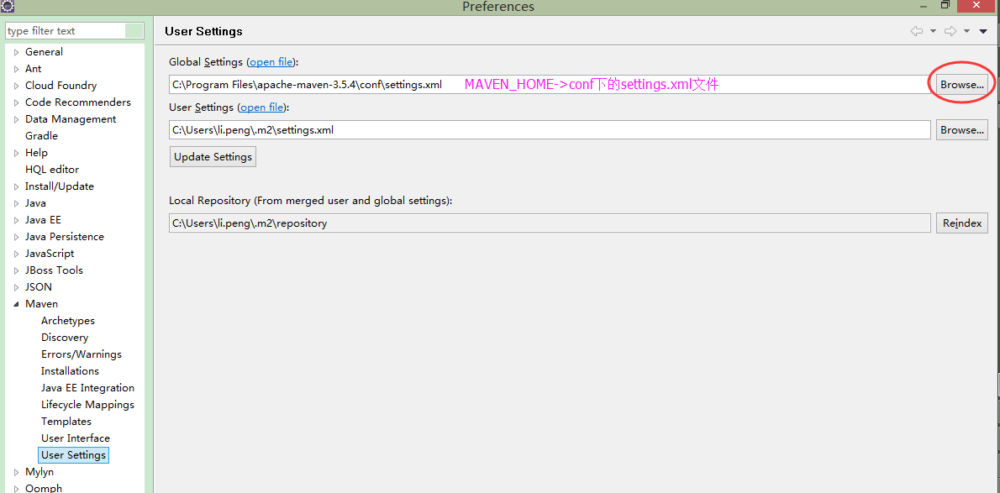
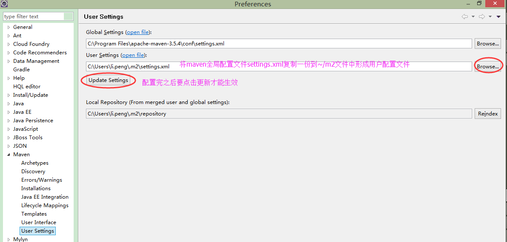
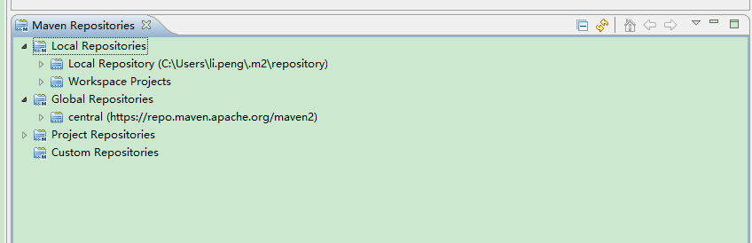
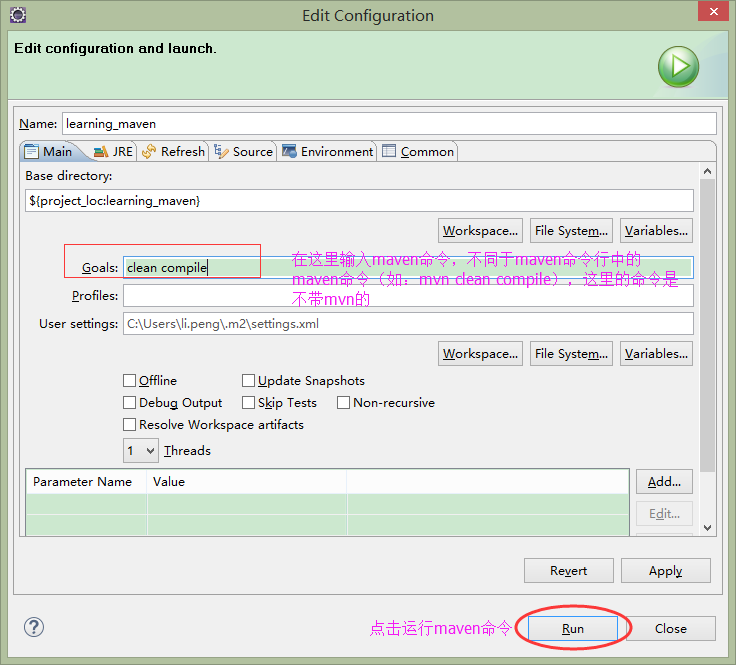

使用自己配置的maven，而不去使用eclipse自带的maven
在eclipse中依次打开Window->Preferences->Maven->Installations



指定maven全局配置文件以及maven用户配置文件
指定maven全局配置文件:在eclipse中依次打开Window->Preferences->Maven->User Settings配置Global Settings
说明：maven全局配置文件是在MAVEN_HOME->conf文件夹下的settings.xml文件

指定maven用户配置文件，分以下两步：
第一步：将maven全局配置文件复制一份到~/m2文件中，然后可以根据需要修改部分属性（不修改就默认与全局配置文件一致）
第二步：在eclipse中配置maven用户配置文件（上一步复制过来的settings.xml文件），然后进行更新

在eclipse中使用Maven Repositories视图
在eclipse中依次点击Window->Show View->Other...->Maven->Maven Repositories即可打开Maven Repositories视图

在eclipse中使用Maven命令
在项目的pom.xml文件中点击右键->点击Run As->点击Maven build...（第二个Maven build）
在弹出的窗口中输入maven命令
